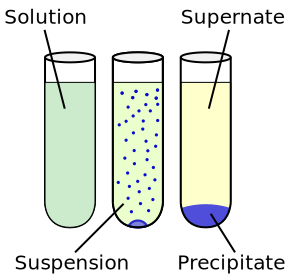
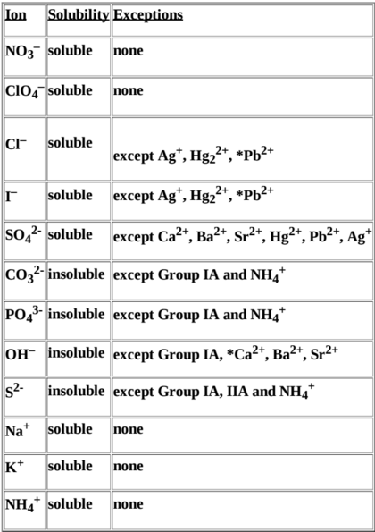

Salts and Precipitant
When an acid and base react in water, the neutralization reaction looks something like this:
`HBr + KOH rArr H_2O + K^+ +Br^-`
The `H^+` and `OH^-` combine to form `H_2O` while the `K^+` and `Br^-` remain as ions in solution. In neutralization reactions, a salt is formed. The salt in this reaction is the KCl molecule which can be made by combining `K^+` and `Br^-` (recall Coulombic attractions). If you look at most acid-base reactions, a salt is created as a byproduct:
Acid + Base `rArr` salt + water
KCl and NaCl are examples of salts. A salt can be described as an ionic solid formed by an anion and cation, where cations are the positive ions (`K^+`) and anions the negative (`Br^-`). Because of this, salts can also be written in the ionic form e.g NaCl can be written as `Na^+Cl^-`. If you have trouble remembering which is which, just remember that cat(ions) are pawsitive.
In general, salts will dissociate when placed in water. We've seen an example of this in the previous post where table salt (NaCl) was placed in a solution of water:
`NaCl + H_2O rArr Na^+ + Cl^- + H_2O`
Most of the time this dissociation goes smoothly. There are certain times, however, where an insoluble salt is formed. An insoluble salt is a salt that is incapable of being dissolved. For example, consider what would happen if we dissolved two different salts inside one solution of water.
`NaCl + MgBr + H_2O rArr Na^+ + Cl^- + Mg^+ + Br^- + H_2O`
The two salts first dissociated into their respective cations and anions. These dissociated ions can then interact and recombine with each other:
`Na^+ + Cl^- + Mg^+ + Br^- rArr Mg^+Cl^- + Na^+Br^-`
What was originally NaCl and MgBr has now recombined to form NaBr and MgCl, the same way partner swaps work in dancing. If the new combined salts are still soluble, they will just dissociate again and stay dissociated. If the new salts are insoluble however, the salts will form a solid precipitate in the solution. In a test tube, the precipitate usually collects on the bottom and is usually noticeably different from the solution.

Consider the following reaction:
` 3NaOH + FeCl_3 + H_2O rArr 3Na^+ + 3OH^- + Fe^(3+) + 3Cl^- + H_2OrArr Fe(OH)_(3 (s)) + 3Na^+ + 3Cl^- + H_2O`
Notice that the `Fe(OH)_3` doesn't dissociate any further. This is because `Fe(OH)_3` is an insoluble salt. The NaCl remains dissociated as `Na^+` and `Cl^-` because it is a soluble salt. You may have noticed that the subscript on the `Fe(OH)_3` includes a small `(s)`. This is to denote the state (solid, liquid, gas) of the product, which is now a solid. So far I've been leaving out the subscripts to make learning simpler. With the subscripts, the equation looks like this:
` 3NaOH_((s))+ FeCl_(3 (s)) + H_2O_((l)) rArr Fe(OH)_(3 (s)) + 3Na_((aq))^+ + 3Cl_((aq))^- + H_2O_((l))`
Make sure you can explain where each ion comes from for both equations! The intermediate step is left out in this equation seeing as this is the actual reaction that's going on. The `NaOH` and `FeCl_3` begin as solids, denoted by subscript `(s)`. After being mixed in liquid water, they form solid `Fe(OH)_3` and aqueous `Na^+` and `Cl^-`. The aqueous concept is often found to be confusing, so think of it this way: an aqueous reactant is a reactant that's dissolved in water. This is denoted by subscript `(aq)`. When a gas is involved in a reaction, the subscript `(g)` is used. While these subscripts won't be used in most reactions in the future, they are important in precipitation reactants because they denote which reactants are insoluble and which are soluble. In this reaction, we know that `Fe(OH)_3` is insoluble because it remains a solid despite being in liquid water, whereas `Na^+` and `Cl^_` are known to be soluble seeing as they're both aqueous.
Solubility Rules
For the most part, there are trends that allow us to predict the solubility of various salts. These are categorized in this following table:

The ions are listed on the left column. The exceptions column describes the exceptions to when the compound is soluble or insoluble. For example, salts containing the `Cl^-` ion e.g `NaCl, KCl, MgCl_2` are all soluble except for the ones containing the exceptions e.g `AgCl, HgCl_2, PbCl_2`. This chart shouldn't be something you memorize as it's a simplification of true solubility rules. Instead, you should be able to look at a salt and determine whether it's soluble or not by reading the chart.
In the latter half of the course, we'll look at where these solubility rules come from and why there are exceptions. The short answer is that solubility depends on a lot of factors such as intermolecular forces and polarity. Additionally, it turns out that every salt is actually soluble to an extent, but insoluble salts are only soluble to a negligible degree.
Ionic Equations
In chemical equations, we write the reactants and products of a particular reaction in order to demonstrate how they react. For chemical equations involving ionic compounds, there are often no reactions between molecules or only some molecules reacting. If we take a look at the dissociation of `MgCl_2` in water:
`MgCl_(2 (s)) + H_2O_((l)) rArr Mg_((aq))^+ + 2Cl_((aq))^+ + H_2O_((l))`
There is no actual reaction! The only thing that's happening is that MgCl is dissociating to form `Mg^+` and `Cl^-` ions. A chemical reaction is a reaction in which a new chemical compound is formed; notice that no new compounds are being formed.
Since there is no actual reaction going on, the reaction can be best described as "no reaction." Now consider the reaction used earlier:
` 3NaOH_((s))+ FeCl_(3 (s)) + H_2O_((l)) rArr Fe(OH)_(3 (s)) + 3Na_((aq))^+ + 3Cl_((aq))^- + H_2O_((l))`
Is there a chemical reaction occuring? The answer is yes, since a new compound in the form of `Fe(OH)_3` is formed. Notice that there are some ions that don't do anything in the reaction. For example, `Na^+` and `Cl^-` just stay in solution and don't take part in the formation of `Fe(OH)_3`. These are called spectator ions. A reaction that contains all of the spectator ions is called a complete ionic equation and is written by dissociating both the reactants and products. Here's the complete ionic equation for the above reaction.
` 3Na_((aq))^+ + OH_((aq))^- + Fe_((aq))^(3+) + 3Cl_((aq))^- + H_2O_((l)) rArr Fe(OH)_(3 (s)) + 3Na_((aq))^+ + 3Cl_((aq))^- + H_2O_((l))`
You can determine what ions are spectator ions by writing out the complete ionic equation and removing the ions present on both sides of the reaction. `Na^+ " and " Cl^-` are on both sides of the reaction and can be considered spectator ions.
Most of the time, the complete ionic equation is unnecessary. Instead, we can simplify the equation by removing the spectator ions, seeing as they aren't doing anything anyways. In the formation of `Fe(OH)_3`, which ions are involved in the reaction? Certainly the `Fe^3+` and `OH^-` ions. The rest aren't actively contributing to the reaction and are just spectating. Therefore, we can remove them and write the equation as follows:
`Fe_((aq))^(3+) + 3OH_((aq))^- rArr Fe(OH)_(3 (s))`
This is called the net ionic equation and is found by removing all spectator ions. Think of this as the most simplified version of the chemical equation.
To summarize, the molecular equation involves every single molecule that is remotely involved in the reaction:
` 3NaOH_((s))+ FeCl_(3 (s)) + H_2O_((l)) rArr Fe(OH)_(3 (s)) + 3NaCl_((aq))^+ + H_2O_((l))`
If there are ions involved, the complete ionic equation includes the dissociations of all reactants and products:
` 3Na_((aq))^+ + OH_((aq))^- + Fe_((aq))^(3+) + 3Cl_((aq))^- + H_2O_((l)) rArr Fe(OH)_(3 (s)) + 3Na_((aq))^+ + 3Cl_((aq))^- + H_2O_((l))`
The net ionic equation removes all spectator ions i.e ions present on both sides of the equation:
`Fe_((aq))^(3+) + 3OH_((aq))^- rArr Fe(OH)_(3 (s))`
Summary
A salt is a compound formed by the combination of an anion and a cation. These are usually formed as a product of an acid-base reaction.
In general, salts will dissociate in water. Salts that do not dissociate are called insoluble salts, and form a precipitate.
The table of solubility rules provides a guideline for which salts are soluble and which aren't.
A chemical equation occurs when a new compound is formed.
Equations involving ionic compounds are usually written in the net ionic form, where all spectator ions are taken out of the equation.